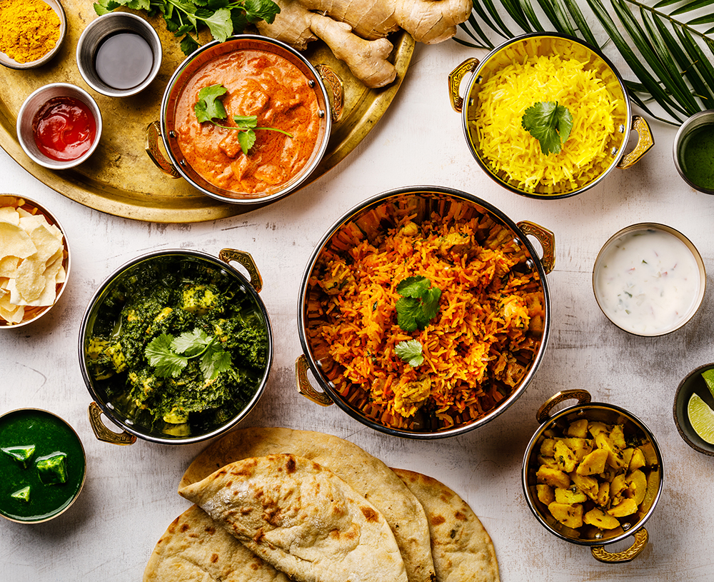
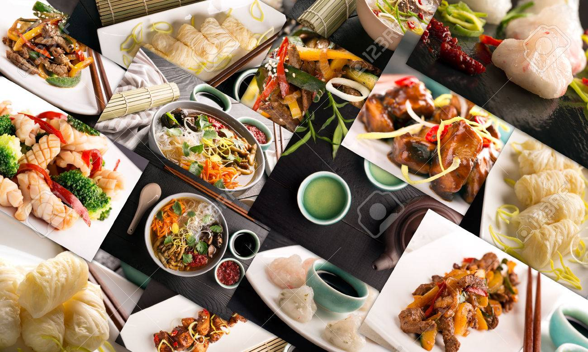

SOUTH INDIAN FOOD

The dosage of chilli and pepper is higher in South Indian food. ... The main spice ingredients in most South Indian dishes is chilli, coriander, cumin and black pepper making them spicy. The tropical and semi-tropical Southern region yields rice more efficiently, which is a prominent food in the majority of dishes.

North India is also extremely famous for its barbecued meats. Tandoori chicken, chicken that's been marinated in spices and yogurt and then roasted in a clay oven known as a tandoor, is one of the most famous. Common vegetables include potatoes, peas, okra, onions, carrots, and all sorts of beans.

A typical Chinese meal will have two things - a carbohydrate or starch like noodles, rice or buns, and accompanying stir fries or dishes of veggies, fish and meat. They use a lot of fresh vegetables like mushroom, water chestnuts, bamboo and even tofu. In North China, wheat-based accompaniments like noodles and steamed buns dominate the table, in contrast to South China where rice is a favourite.